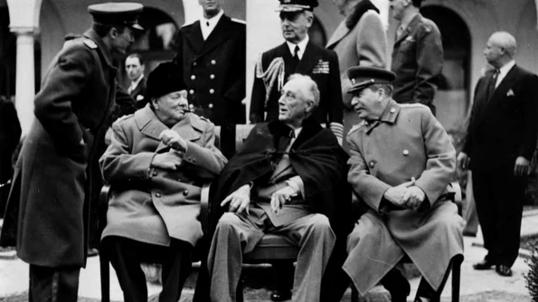

- Blocada Berlinului (1948–1949) – Stalin a blocat accesul terestru spre Berlinul de Vest, încercând să forțeze retragerea aliaților occidentali. Răspunsul a fost „podul aerian" al SUA și Marii Britanii, care a aprovizionat orașul timp de aproape un an cu alimente și combustibil.
- Războiul din Coreea (1950–1953) – Primul conflict armat major al Războiului Rece. Coreea de Nord, sprijinită de URSS și China, a invadat Coreea de Sud. ONU, condusă de SUA, a intervenit. Războiul s-a încheiat cu un armistițiu și împărțirea peninsulei la paralela 38.
- Construirea Zidului Berlinului (1961) – RDG a ridicat un zid de 155 km pentru a opri exodul est-germanilor spre Berlinul de Vest. A devenit simbolul cel mai vizibil al diviziunii Europei și a Războiului Rece.
- Criza rachetelor din Cuba (1962) – URSS a instalat rachete nucleare în Cuba, la 150 km de SUA. Confruntarea dintre Kennedy și Hrușciov a adus omenirea la cel mai apropiat punct de un război nuclear. Criza s-a rezolvat prin retragerea rachetelor și o promisiune americană de a nu invada Cuba.
- Războiul din Vietnam (1955–1975) – SUA au sprijinit Vietnamul de Sud împotriva regimului comunist din Nord. A fost un eșec militar și politic american, soldat cu peste 58.000 de soldați americani morți și milioane de victime vietnameze.
- Invazia sovietică în Afganistan (1979–1989) – URSS a intervenit pentru a sprijini regimul comunist afgan, dar s-a confruntat cu rezistența mujahedinilor susținuți de SUA. Acest „Vietnam sovietic" a slăbit considerabil URSS.
